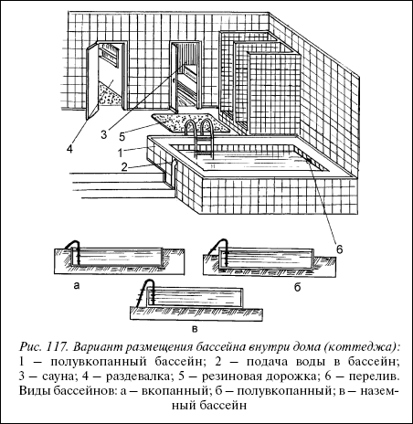
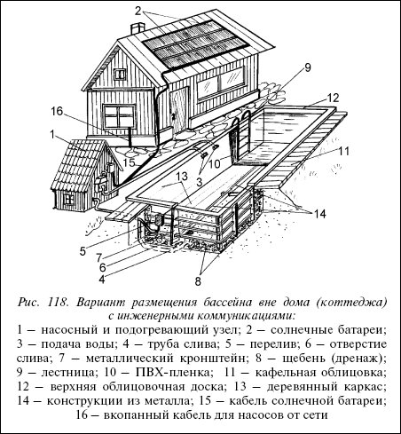
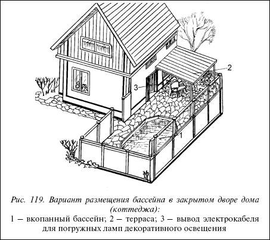

Строительство бассейнов.

Современная технология позволяет сегодня практически каждому человеку соорудить себе бассейн или пруд различного назначения. В продаже имеются все необходимые строительные материалы: бетон, дерево, металлическая арматура, трубы, насосы, гидроизоляционные материалы. В широком выборе есть и готовые конструкции бассейнов (прудов), которые поставляются в торговую сеть в разобранном виде. В зависимости от вашего вкуса и возможностей можно построить (собрать из готовых составляющих) водоем объемом от 16 до 420 м .
Выбор места для бассейнаЧтобы принять правильное решение относительно местонахождения бассейна, необходимо учесть ряд факторов.

Рис. 117. Вариант размещения бассейна внутри дома (коттеджа):
1 – полувкопанный бассейн; 2 – подача воды в бассейн; 3 – сауна; 4 – раздевалка; 5 – резиновая дорожка; 6 – перелив. Виды бассейнов: а – вкопанный; б – полувкопанный; в – наземный бассейн
Осушение приусадебного участкаСовет
Не рекомендуется сооружать бассейн в непосредственной близости от деревьев. Их корни, стремясь к воде, могут повредить (прорвать) гидроизоляцию бассейна. Кроме того, попадающие в бассейн листья с этих деревьев при своем разложении способствуют развитию зеленых водорослей. Особенно противопоказано соседство с такими деревьями как тополь, ракитник, конский каштан, ива.
Приступая к освещению данного раздела, мы исходили из того, что вопрос осушения участка при строительстве бассейна может перед вами и не стоять, но такова же вероятность того, что он встанет. Ведь наличие бассейна существенно повлияет на микроклимат участка, на его водный баланс. Практика свидетельствует о том, что почти каждый владелец дачи, коттеджа, загородного дома хоть раз, но сталкивался с необходимостью провести осушение, дренаж, другие мелиоративные работы. И знание этого вопроса всегда должно быть в копилке человека, решившего максимально использовать выгоды своего земельного участка.

Рис. 118. Вариант размещения бассейна вне дома (коттеджа) с инженерными коммуникациями:
1 – насосный и подогревающий узел; 2 – солнечные батареи; 3 – подача воды; 4 – труба слива; 5 – перелив; 6 – отверстие слива; 7 – металлический кронштейн; 8 – щебень (дренаж); 9 – лестница; 10 – ПВХ-пленка; 11 – кафельная облицовка; 12 – верхняя облицовочная доска; 13 – деревянный каркас; 14 – конструкции из металла; 15 – кабель солнечной батареи; 16 – вкопанный кабель для насосов от сети
Следует учесть
Начинать осушение следует с нивелировки участка по высотам рельефа и определения уровня грунтовых вод.
Основное условие эффективного осушения участка – наличие глубокого (не менее 1 м) уличного кювета с гарантированным водосбросом в сторону уклона рельефа, но даже и на равнине такой кювет снимает подпор грунтовых вод и заметно снижает их уровень на примыкающей к кювету территории.

Рис. 119. Вариант размещения бассейна в закрытом дворе дома (коттеджа):
1 – вкопанный бассейн; 2 – терраса; 3 – вывод электрокабеля для погружных ламп декоративного освещения